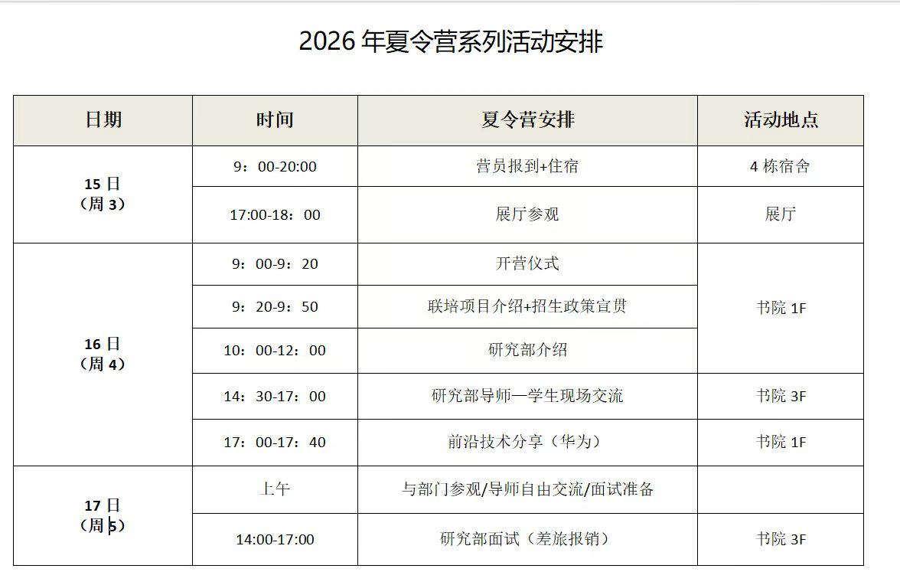

FIELD NOTE / 2026
鹏城国家实验室夏令营
夏令营
现场接触导师和联合培养渠道；面试以科研经历汇报为主。
2026 夏令营线下约 80 人约 5 分钟个人汇报
01 / 为什么参加
鹏城国家实验室的一大吸引力，是与清华大学、北京大学相关深圳研究院或项目存在联合培养机会。夏令营期间可以直接接触不同部门和导师，提前了解研究方向、课题组情况以及联合培养渠道。
如果提前联系的导师与清华、北大深圳方向存在合作关系，后续可能获得推荐或对接相关老师的机会；报名相关联合培养项目时，前期已经建立联系也会更有帮助。
02 / 夏令营官方流程
官方流程主要包括报到、开营、联培项目介绍、研究部介绍、师生现场交流、自由交流与面试，具体安排如下图。

03 / 我的实际参营体验
这个夏令营不属于“大海营”，去年线下实际到场大约 80 人。第一天主要是各部门介绍和师生面对面交流，可以根据自己的研究兴趣去听不同部门的介绍，并主动找感兴趣的老师沟通。
第二天主要是面试，每个人可以选择两个感兴趣的部门。我当时以个人 PPT 汇报为主，大约介绍 5 分钟，内容主要是个人背景、科研经历和感兴趣的研究方向；整体压力不大，老师追问不多。
04 / 面试问题
请用一句话概括这篇论文所研究任务的核心难点，以及你们解决该难点的主要思路。
05 / 结果、食宿与实际价值
最终获得优营，但从后续保研过程来看，优营本身没有带来特别明显的直接优势。对我来说，更有价值的是提前接触导师、了解研究方向和联合培养项目。
参营成本比较低：实验室可以报销往返车费，住宿免费，一般是两人一间；营期内会提供饭票，吃饭基本免费。